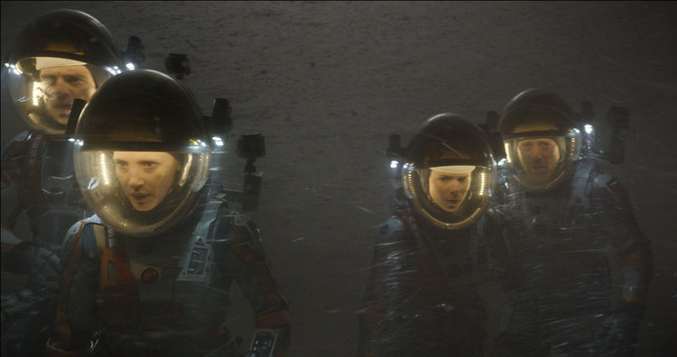
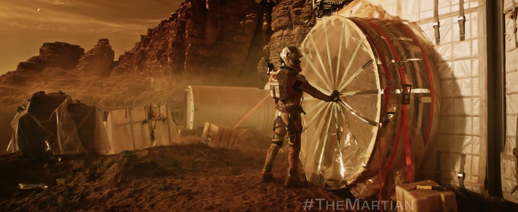
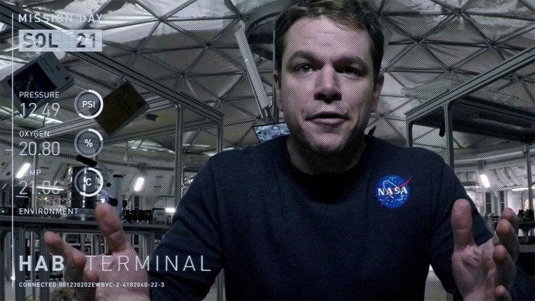
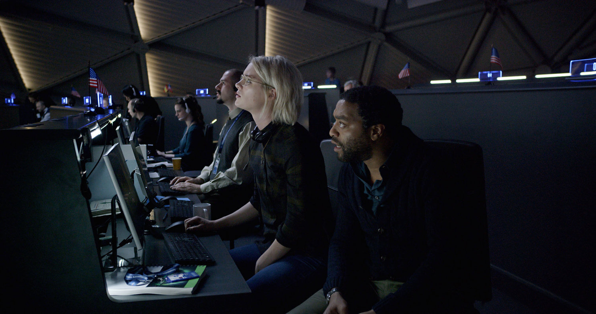

The Martian — Movie That Changed My Perspective towards Work and Life
July 8, 2017
What will you do if you were left on a deserted planet like Mars, without anyone knowing about your survival? With having a life support systems of only 31 days! Will you give up? Or you will get to work and find every way possible for your existence?
Now, there you go my favorite quotes of Marshall McLuhan.
"At some point, everything is going to go south on you. Everything is going to go south, and you gonna say, this is it; this is how I end. Now, either you can accept that, or you can get to work. That’s all it is. You just begin. You do the math, you solve one problem, and then you solve the next one, and then the next. If you solve enough problems, you get to come home." —Mark Watney, fictional character from The Martian
The Martian, starring Matt Damon, is going to restore your faith in the human spirit. It’s going to make belief in the fact that as human we have a basic instinct to help each other. I loved the movie. I loved it so much next time I sat down to watch, I took my journal to take notes for my life and business. Here are the things I learn. And every single day it is helping me to improve my work plus life. These notes are making be a better human being.
01. Shit Happens
With no fault of your own, you will get into unavoidable trouble any point of life or business.
When the sandstorm appears on Mars, it’s nobody fault, not the crew, NASA or anyone. They had information, and they had predictions still that sandstorm took them by surprise, and as a result of which Mark Watney, accidentally gets stranded on Mars. Alone!
Takeaway: Don’t be sure of things. You don’t have to. In business we can only control fifty percent of what we do—so it's imperatives that we look ahead, and identify possible pitfalls, and work or buts off to control what we can. Remember, no amount of guilt will change the past, no amount of anxiety will modify the future. Live in the moment. And when things go wrong, don’t go with them.
02. Make a Decision
When the reality hits Mark; that he is left alone. He sleeps one night without reacting to the situation and next day he says, “I am not going to die here.”
Takeaway: It's during our darkest moment that we must focus on seeing the light. Don't give up. There is a light somewhere, it might not be much light, but it beats the darkness. Most of our action to a sudden event is dependent of reacting to a situation. Often we tend to react to a problem than solving it. Now on, whenever I get into to a situation which demands my reaction, I sleep on it. Next day, or next hour I decide how well I can tackle this situation.
03. First-aid Before You Operate
In the movie, you can see that Mark keeps on solving issues with the limited resources he is available with him. You can see how he solves a complicated situation like leakage of oxygen from his helmet with a duck tape.
Takeaway: we often complain about the things that we don’t have rather than complaining try to solve a problem with limited resources. Constraints are known for inventing the best of creativity. If you believe you can tolerate the uncertainty, I can assure you that you will grow as an individual or an entrepreneur.
05. You Don’t Have to See The Whole Staircase
Mark splits his goals into smaller tasks and tries to solve one problem at a time. Then he goes on solving the next, and then next.
Takeaway: Execution is the strategy. You might have a perfect idea, but if you fail to execute; it will only be a perfect idea. Only. It’s impossible to have a good strategy poorly executed. That’s because execution is strategy—separating this leads to confusion. Therefore, always try to split your strategy into smaller pieces and then glue them together to make your way out.
You can see a lot just by observing.
06. Keep a Journal of Your Thoughts and Life
Mark dedicatedly, journals his every day at Mars. All his plans and ideas. Though, that was the only way author/filmmaker could better portray the content and character of Mark Watney's on book/movie. On a clear note, it has helped him to streamline his ideas and solutions the challenges he was facing alone at Mars.
Takeaway: Journaling is more than a history of your thoughts. It's an act of reflection and a way of living deliberately. As George Harrison on his Grammy Nominated song "Any Road" strings it;
"And if you don't know where you're going, any road will take you there." —George Harrison
Be deliberate about the way you live your life. It is important to journal your day, what went wrong? What did you achieve? What didn't go as planned? If you had known better, what change could you have done with the task you acted this morning? And millions of other questions that come up when you write about it. It helps. Journaling helps a lot.
07. Have Faith in Humanity and The Human Spirit
"You must not lose faith in humanity. Humanity is an ocean; if a few drops of the ocean are dirty, the ocean does not become dirty." —George Harrison
As I was saying, The Martian is going to restore your faith in the human spirit. It’s going to make belief in the fact that as human we have a basic instinct to help each other. And you can see the reflection of above lines throughout the movie. How everyone from NASA and the world makes their every single effort to save Mark Watney from the deserted planet.
Takeaway: I stay in Manhattan, New York City. And I know everything that is happening around me and the world. There are so much so going that it is easy to lose faith in humanity. It is easy to blame the economy, politics, your neighbors, and everyone else. No matter what happens, you must not lose faith in humanity. It always will surprise you. It's beyond any of our imagination. Don't let a single incident ruin your day. Don't let your trust wash away, and make the ocean look far dirtier than it truly is.
"Because, I believe the only reason humans exists is to save each other from ourselves."
Let me know what the book to the movie "The Martian" has taught you. If you have not watched or read the book, I would suggest you do that. It will worth your time.